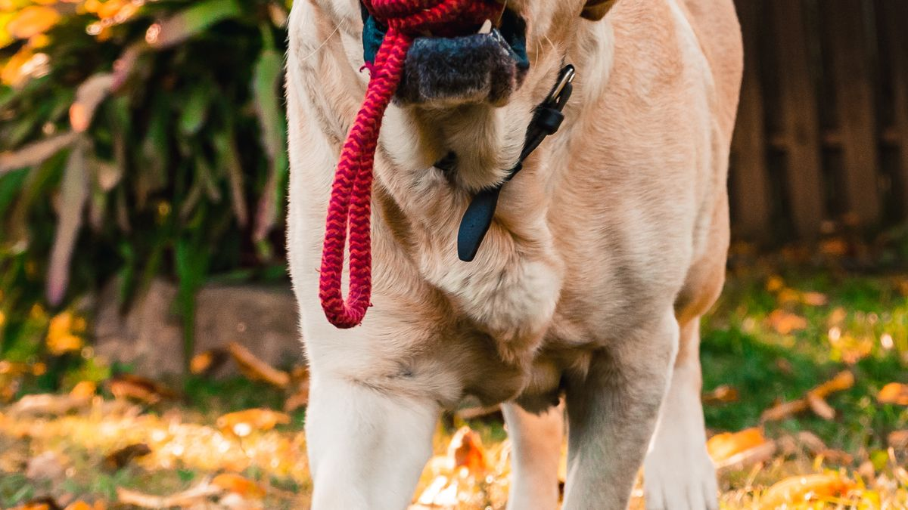
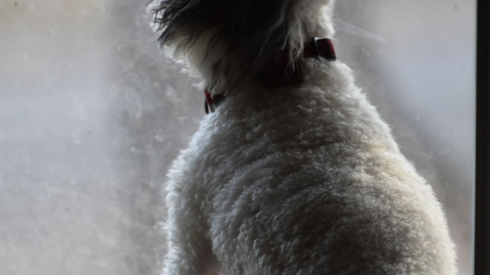

흔한 원인
패드 교체 36시간 지연, 모래 청소 3일 미루기, 침구 2주 미세탁, 환기 0회—이 4가지가 겹치면 냄새가 2층·신발장까지 퍼집니다. 원인은 80% '관리 주기'입니다.

루틴 제안
- 배변 패드: 하루 2회(아침·저녁) 교체, 소변 3회 이상이면 즉시
- 고양이 모래: 응고 덩어리 하루 2회 제거, 2주에 1회 통 세척
- 침구·담요: 주 1회 40도 세탁
- 환기: 하루 2회, 각 10분(대류 창문 양쪽 개방)
패드 교체 시간을 아침·저녁 급여와 묶어 두면 잊지 않기 쉽습니다. 고양이 모래는 응고 제거 후 1분 간단히 저어 주면 냄새 축적이 느려지는 경우가 있습니다.
제품 사용 시
향 강한 스프레이(1만 원)는 15분 후 재오염되기 쉽습니다. 펫 전용 바닥 세제(1L 8천 원)를 희석해 걸레질 후 완전 건조가 낫습니다. 분사 후 30분 환기를 기본으로 합니다.

펫 전용 세제는 희석 비율을 라벨대로 지키세요. 향이 남으면 반려동물이 그 구역을 피하는 경우가 있습니다. 세제 후 30분 환기는 최소 기준입니다.
환기와 공기청정기
공기청정기(20~40만 원)는 환기 보조입니다. 하루 20분 환기 없이 청정기만 24시간 가동하면 CO₂·습도 문제가 남을 수 있습니다. 환기 10분+청정기 2시간 조합이 현실적입니다.

환기 시 반려동물이 있는 방은 창 개폭 15cm+스토퍼를 권합니다. 공기청정기는 환기 후 2시간 가동 정도가 현실적인 조합입니다.
실전 적용 노트
냄새의 80%는 탈취제가 아니라 관리 주기에서 옵니다. 패드 36시간 지연, 모래 3일 미청소, 침구 2주 미세탁, 환기 0회가 겹치면 2층까지 퍼질 수 있습니다.
패드 교체를 아침·저녁 급여와 묶어 두면 잊지 않기 쉽습니다. 소변 3회 이상이면 즉시 교체를 기준으로 하세요.
향 강한 스프레이는 15분 후 재오염되기 쉽습니다. 펫 전용 바닥 세제 희석+걸레질+완전 건조+30분 환기 순서가 낫습니다.
환기는 하루 2회 각 10분, 대류 창문 양쪽 개방이 기본입니다. 공기청정기는 환기 보조이며, 24시간 가동만으로 CO₂·습도 문제가 해결되지는 않습니다.
여름 습도 60% 넘으면 제습·건조 주기를 2일로 줄이세요. 겨울 난방기 앞은 건조·정전기가 심해질 수 있습니다.
냄새가 갑자기 심해지고 배변 패턴이 함께 바뀌면 7일 메모와 함께 검진을 검토하세요.
현관에 탈수실·발 닦기 매트를 두면 실내 오염 반입이 줄어듭니다. 비 오는 날은 수건으로 발을 먼저 닦는 시간 30초만 추가해도 효과가 있습니다.
빨래는 반려동물 전용 세제를 쓰고, 사람 옷과 분리 세탁하세요. 건조가 덜 되면 곰팡이 냄새가 다시 올라옵니다.
환기할 때 반려동물이 창가·발코니에 없는지 확인하는 체크를 습관화하세요.
이번 주 냄새·환기 체크리스트입니다. 탈취제보다 주기가 먼저입니다.
- 패드·모래 청소를 급여 시간과 묶어 실행했습니다.
- 소변 3회 이상 시 패드를 즉시 교체했습니다.
- 하루 2회 각 10분 이상 대류 환기를 했습니다.
- 향 강한 스프레이 대신 세제+걸레+건조+환기 순서를 지켰습니다.
- 반려동물 침구·담요를 2주 이내 세탁했습니다.
- 현관 발 닦기·탈수실을 이용했습니다.
- 여름 습도 60% 넘을 때 건조 주기를 줄였습니다.
- 환기 시 창가·발코니 접근을 확인했습니다.
냄새가 갑자기 심해지면 탈취부터가 아니라 배변·식욕 메모를 먼저 보세요.
냄새는 탈취제보다 패드·모래·침구·환기 주기에서 결정됩니다. 급여 시간에 청소를 묶고, 향 강한 스프레이 대신 세척+건조+환기 순서를 지키세요. 갑자기 냄새가 심해지고 배변·식욕이 함께 바뀌면 7일 메모 후 검진을 검토합니다. 현관 발 닦기와 하루 2회 10분 환기만 지켜도 체감이 달라지는 집이 많습니다.
실전 노트는 하루에 전부 적용하기보다, 체크리스트 3개만 골라 2주 반복하는 방식이 오래 갑니다. 잘 되는 항목만 남기고 나머지는 과감히 빼도 괜찮습니다.
마무리로, 이번 주에는 체크리스트 3개만 골라 2주 반복해 보세요. 작은 성공이 쌓이면 나머지는 자연스럽게 늘어납니다.
기록이 쌓이면 병원·상담 때 설명이 쉬워집니다. 한 줄 메모라도 같은 항목으로 이어 쓰는 것이 핵심입니다.
완벽한 루틴보다 80% 지켜지는 루틴이 오래 갑니다. 안 된 날은 원인 한 줄만 적고 다음 주에 조정하세요.
오늘 당장 하나만 고른다면, 체크리스트 맨 위 항목부터 시작해 보세요. 나머지는 다음 주로 미뤄도 괜찮습니다.
가족이 함께 돌본다면, 누가 했는지 체크박스 한 칸만 추가해도 누락·중복이 줄어듭니다.
검색으로 답을 찾기 전에 7일 메모를 먼저 정리해 보세요. 증상 설명이 훨씬 빨라지는 경우가 많습니다.
새 용품·새 사료·새 루틴은 동시에 바꾸지 않습니다. 한 가지만 바꾸고 5일 관찰하는 편이 안전합니다.
이번 달 목표는 '매일 완벽'이 아니라 '이번 주 3회 성공'입니다. 0회에서 1회로 바뀌는 것만으로도 충분한 진전입니다.
정리하며
탈취제 3병 쓰는 집보다 패드 교체를 지키는 집이 냄새가 덜 납니다.
저는 냄새 문제 상담 때 스프레이 이름보다 '패드 마지막 교체가 언제였는지'를 먼저 묻습니다.
오늘 환기 10분과 패드 교체 시간만 확인해 보세요. 냄새는 습관에서 먼저 줄어듭니다.
초보자가 자주 실수하는 포인트
- 탈취 스프레이만 하루 3회 분사
- 환기 없이 밀폐+향초 사용
- 패드 48시간 이상 방치
- 모래 냄새 날 때까지 방치
- 세제 헹굼 없이 바닥에 잔류
체크리스트
- 패드 아침·저녁 교체 알람
- 모래 2주 세척 캘린더
- 담요 주 1회 세탁
- 환기 10분×2회 알람
- 저자극 펫 세제 준비
자주 묻는 질문
- 공기청정기가 필요할까요?
- 환기와 청소가 우선입니다. 미세먼지·꽃가루 시기에 보조로 고려하세요.
- 탈취 스프레이를 써도 되나요?
- 향으로 덮기보다 패드·모래 청소 주기를 먼저 점검하세요. 펫 전용 바닥 세제+환기가 더 지속적입니다.
- 냄새가 갑자기 심해졌어요.
- 패드·모래·침구 세탁 주기를 확인하세요. 배변 패턴 변화가 함께 있으면 7일 메모와 함께 검진을 검토하세요.
이 글은 초보자 기준으로 이해하기 쉽게 정리되었으며, 내용은 운영 과정에서 순차적으로 보완될 수 있습니다. 수의사 등 전문가의 진단·처치를 대체하지 않습니다.